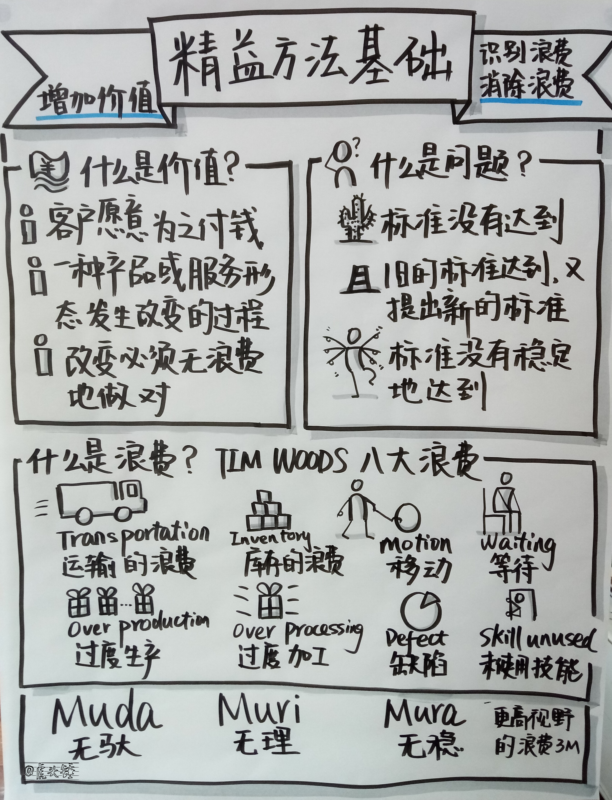

精益是敏捷的重要来源，敏捷对精益作了继承和发扬。
精益的体系浩繁，本文按4＊2的结构进行介绍，即从思想、方法、模式和工具四个层面对精益进行介绍，并在四个层面分别谈及在敏捷中的体现和运用。最后用三纲八目的结构，总结精益中最重要的三个思想及八种落实的方法。
精益学问体系有四个层面：
- 思想：是大脑，是思维。
- 方法论：是在宽泛领域看事情的眼睛。是复眼。
- 解决方案（模式）：是对特定场景问题的总是有效的解决方法。
- 工具：是在狭窄领域看事情的眼睛。是单眼。

思想
就思想而言，涉及到的人包括：
- 丰田佐吉、丰田喜一郎、大野耐一作为创始祖师。
- 詹姆斯沃迈克作为研究第一人。
- 杰弗瑞莱克作为另树一帜的研究人。
思想的应用者：
- Scrum 的创始人 Jeff Sutherland & Ken Schwaber。
- Lean Software Development 的创始人 Mary Poppendieck。
- Kanban 方法的创始人 David Anderson。
- LeSS 的创始人 Craig Larman。
- SAFe 的创始人 Dean Leffingwell。
在方法论领域的精益大师：
- 约翰舒克，特别是在 A3 报告和价值流图方面把相关知识显式化的功劳。
精益思想
精益学问体系的思想，无法简单描述，就脉络来说，大致三个：
- 丰田屋或精益屋，经由以大野耐一为代表的创始祖师，和后续发展。
- 詹姆斯沃迈克的精益思想。
- 杰弗瑞莱克的丰田 4P。
丰田佐吉、丰田喜一郎和大野耐一等人关于丰田生产方式的思想，反映在丰田屋模型中。屋顶代表的是通过最佳质量、最低成本、最短生产周期和消除浪费来为客户创造价值。底座代表的是管理层对创造价值和消除浪费的长期承诺和支持。两个支柱是自动化和及时化。自动化是关于个人自动自发。及时化是关于团队合作。
渡边昭捷丰田之道2001版的丰田屋模型中，两个支柱演变为持续改善和尊重人。新支柱从概念上来讲，适用的范围更广泛，但也存在丢失旧支柱包含的精神的风险。
Craig Larman 写了一本 < Lean Primer >，将精益介绍到软件界，并使之成为其 LeSS 的重要思想基础。Craig 在书中也总结了一个精益屋，跟丰田本身的屋子模型基本相似，只是在术语上采用了软件开发人员更容易明白的术语。
LeSS 的对手 SAFe 也以精益作为基础。SAFe 的创始人在 SAFe 体系中也使用了屋子模型。这个屋子的屋顶是价值，底座是领导力，跟前几个屋子模型一致。不同的是，支柱变成了四个，在尊重人和持续改善之外，增加了流动和创新。流动和创新也是丰田模式中本有的概念。
精益软件开发的创始人 Mary Poppendieck 从精益中提炼了7个原则，应用于软件开发中：消除浪费，增加反馈，延迟承诺，尽快交付，内建质量，赋能团队和全局优化。
精益软件开发中的一部分思想来自于詹姆斯沃迈克总结的精益思想，这也是精益思想的另一个山头。沃迈克作为精益思想第一人，是把精益介绍给全球的主要桥梁。沃迈克经过对丰田的研究，提出了精益思想五原则：价值，价值流，流动，拉动和尽善尽美。
精益中重要思想“流动”的历史，则可以追溯到1574年亨利三世在威尼斯造船时采用的连续流，经由1799年埃里惠特尼的可互换件，1902年丰田佐吉的自动化，1910年亨利福特的流水线，1950年戴明的统计过程控制，发展到后来的丰田生产方式。
精益思想的第三个高耸的山头是杰弗瑞莱克的丰田模式和 4P 模型。杰弗瑞莱克对丰田的研究，不次于詹姆斯沃迈克，被称为最懂丰田的人。
杰弗瑞莱克丰田 4P 模型及14条原则
Philosophy 理念
- 原则1. 管理决策以长期理念为基础，即使因此牺牲短期财务目标也在所不惜。
Process 流程
原则2. 建立连续的作业流程以使问题浮现。
原则3. 使用拉动式生产方式以避免生产过剩。
原则4. 使工作负荷平均（生产均衡化）。
原则5. 建立立即暂停以解决问题、从一开始就重视质量控制的文化。
原则6. 工作的标准化是持续改善与授权员工的基础。
原则7.通过可视化管理使问题无所隐藏 。
People and Partners 员工与合作伙伴
原则8.使用可靠且已经充分测试的技术以协助员工及生产流程。
原则9.培养深谙公司理念的领袖，使他们能教导其他员工。
原则10. 培养与发展信奉公司理念的杰出人才与团队。
原则11. 重视合作伙伴与供应商，激励并助其改善 。
Problem Solving 问题解决
原则12.亲临现场，彻底了解情况（现地现物）。
原则13.制定决策时要稳健，穷尽所有的选择，并征得一致意见；实施决策时要迅速 。
原则14.通过不断省思与持续改善以成为一个学习型组织。
莱克的书中，不提精益，重回本名：丰田模式。沃迈克在后来的一本书，《十年观察》中采用了目的、流程、人的框架，也暗合了莱克的表述。
丰田模式的4P模型和14条原则，揭示了一种真北标准。
具备真北标准的企业具备三个特征：
特征一、具备正义的目的。
正义的目的有两层含义，一是以客户价值为中心，二是以正义和不作恶的方式达成目的。
海底捞的使命：服务至上、顾客至上，以创新为核心，提倡个性化的特色服务，致力于为顾客提供愉悦的用餐服务。
丰田父子传承的使命： 丰田佐吉临终前，将丰田喜一郎叫到眼前，给他留下了作为父亲的最后一句话：“我搞织布机，你搞汽车，你要和我一样，通过发明创造为国效力。”
谷歌不作恶使命： 组织全球信息，使人人皆可访问和使用。
不作恶口号的提出来自员工。由阿米特帕特尔于1999年提出，或者是由保罗·布克海特在2000年或是2001年初有关企业价值观的会议上提出。
这个口号被创始人采纳和推广。Google 2004年的首次公开募股的招股书（又名“S-1”），（Google创始人的一封信，后来被称为“不作恶的宣言”）：“不要作恶。我们坚信，作为一个为世界做好事的公司，从长远来看，我们会得到更好的回馈-即使我们放弃一些短期收益。”
口号最重要不是拿来说和挂在墙上，而是相信自己的口号和拿来使用。在做产品时，如果会伤害用户的利益，虽然有短期收益，也可以根据这一价值观来否决，而且这个否决可以来自任何一个人。
特征二、全员主动参与
海底捞在管理上，倡导双手改变命运的价值观，为员工创建公平公正的工作环境，实施人性化和亲情化管理理模式，提升员工价值。
每一个工会会员都必须明白一个基本道理，我们不是在执行公司命令去关心员工，而是真正意识到我们都是人，每个人都需要关心与被关心，而这个关心基于一种信念，那就是人生而平等。
海底捞的内刊上，有两行让人印象深刻的字：倡双手改变命运之理，树公司公平公正之风。在海底捞，员工可以享受一个特权：基层服务员可以享有打折、换菜甚至免单的权利，只要事后口头说明即可。
关于海底捞被人广为称道的细节服务，发圈、眼镜布等，最初只是一个个自发的想法。包丹袋就是这个想法的代表，这是一个防止顾客手机被溅湿的塑封袋子。由于是一名叫包丹的员工提出这个创意的，即用员工的名字命名。“这种命名的方式既能实现他的价值，也是对他的尊重，很多员工都有很多不错的创意，要给他们提供机会。”当包丹袋在其他店也开始使用时，这些店会给这位员工交纳一定的费用。
海底捞这种开放的平台还体现在培养员工的兴趣爱好上。一名员工在和外国顾客交流时，说起了流利的英语，随后公司为此举行了一次英语竞赛，并为优胜者请来了外语老师。“让员工能够发挥自己的特长，从而在工作中获得乐趣，使工作变得更有价值”。
大野耐一：“没有人喜欢自己只是螺丝钉，工作一成不变，只是听命行事，不知道为何而忙，丰田做的事很简单，就是真正给员工思考的空间，引导出他们的智慧。员工奉献宝贵的时间给公司，如果不妥善运用他们的智慧，才是浪费。”
丰田汽车提出“创意工夫提案制度”，对每个员工建议设置500日元到20万日元不等的奖金，优秀建言者的头像会被永久贴上丰田公司的“光荣走廊”。结果，丰田公司在40年间收到了超过2000万个提案，其中99%被采纳。
丰田的创意提案制度强调领导者的参与性和问题的精细化：首先，领导者要对员工进行培训，告诉他们什么是真正的问题；其次，提出的问题具有较强的可行性，员工不需要面对“怎样增支减收”之类的宏观问题，而是具体到“机器之间隔几米能使操作者少走路”“左手应该拿工具还是拿加工半成品”的实操问题；最后，员工不参与工资、考评等领域的建言，以免引起争论与攻击。
谷歌认为，员工应该都成为创意精英（Smart Creatives），才能够使得这个组织产生赋能的效应。
有一个周五下班前，拉里发现了某产品中一个严重的问题。他没有告诉任何人，而是写下了问题，及其影响。拉里把它贴在茶水间，就回家了。
周一早上五点钟，拉里和相关人员就收到一封邮件。邮件不是简单的附和创始人的想法，或是对要解决这个问题的不痛不痒虚张声势的呼吁。相反，邮件中包含了对这一问题根源的详细分析，及对多种方案中最优方案的选择，还有对这一方案的具体执行。而且，还提出了进一步想法，这一想法成了后来一个重大业务的基础。
邮件的发出人只是在周五下班前偶然看到了拉里的纸条，并且从组织架构上来说，他不属于出问题的这个产品。
这个故事的重点不在于是否提倡加班，工作是否需要计划。而在于：
- 每个人都明白公司的当务之急和价值取向。
- 一种不急赏不惩罚不嫉妒的文化：这件事做成了，也不会有马上的奖赏。失败了，也不会被惩罚。成功了，也不会被嫉妒。
这个例子，将谷歌文化的力量彰显的淋漓尽致。如果一个企业支持员工有发言权，那么持相同观点的人就会被吸引来，子曰：近者悦，远者来。在企业成立之初就认真考虑和确定你希望的企业文化，是明智之举。创始人是企业文化的源头，创始人为实现大计而物色并信赖的团队，是企业文化的最佳载体。问一下你的团队：我们重视什么？我们的信念是什么？我们想成为怎样的企业？
特征三、形成一个具有持久生命力的系统。
勉强给企业真北标准下一个定义，大致是：企业有一套理念，这个理念把客户，员工，企业发展，甚至造福社会等各种要素组合在一起，充分考虑各方面的福祉，持续优化形成卓越运作，达到企业的基业长青和个人的幸福。
这样一种管理理念的主要思想是：管理决策的制定以最终的目的为前提，眼光放长远，有一套处理问题的步骤，通过培养员工来为企业增值，并且认同持续不断解决根本问题会促进整体学习的观念。
如果把上述各个流派的精益思想做个总结，可以概括为以下几点：
- 强调目的和价值
- 强调领导者的作用
- 强调对人的尊重
- 强调流程
- 强调问题解决和持续改善
所有这些是精益的要点，也是敏捷的要点，而且所有这些点要有机结合，而不是孤立存在。企业要想通过敏捷转型获得竞争优势，需要对精益体系有完整的理解。这些都是精益和敏捷的元认知，敏捷教练可协助管理者理解。
精益方法基础的重要基本概念
什么是价值？
- 客户愿意为之付钱。
- 是一种产品或服务的形态发生改变的过程。
- 这种改变必须无浪费地做对。
什么是问题？
- 标准没有达到。
- 旧的标准达到了，又提出了新的标准。
- 标准没有稳定地达到，有时能达到，有时不能达到。
什么是浪费？
TIM WOODS 八大浪费：
- Transportation 运输的浪费。
- Inventory 库存的浪费。
- Motion 移动的浪费。
- Waiting 等待的浪费。
- Over production 过度生产。
- Over processing 过度加工。
- Defect 缺陷也是一种浪费。
- Skill unused 未使用的技能。
从更高的视野看什么是浪费
3M：
- Muda 无驮，就是一般所说的浪费。
- Muri 无理，比如说人或设备过载。
- Mura 无稳，比如说有时忙有时闲。
浪费管理的基本思路，跟把大象请出冰箱一样简单。分两步：
- 识别浪费。
- 消除浪费。

这些关于价值、浪费与问题的思想，都是非常深刻的认识，在敏捷当中也是同样适用的。敏捷教练可以把这些思想，运用到问题解决和持续改善中。
###把思想、方法论、解决方案（模式）、工具组合在一起：
定义价值。可以使用：
- 增值工作
- 八大浪费
- 3M
观察整个价值流。可以使用：
价值流图
让增值步骤流动。可以使用：
- 目视管理
- 5S
- 防呆法
- 节拍时间
- 标准工作
- 连续流
- 单元式布局
- 产线均衡
- 快速换模
- 全员生产维护
- 分层流程审计
让客户拉动。可以使用：
看板
持续重复前面的步骤。可以使用：
- 反思
- 经验分享
这个价值流分析，可以直接运用到软件开发的管理中，所使用的具体工具可以变通。David Anderson（《看板方法》）的重要基础就是价值流。
精益方法论
方法论是解决问题的方法，重点介绍 TBP 或 A3 报告。
TBP
TBP：Toyota Business Practice，中文可以叫丰田问题解决法，是A3报告的一种逻辑框架。A3 报告参看在丰田工作过的精益大师 John Shook 的 < Manage to Learn >。
TBP 体现了质量大师戴明的 PDCA。美国人一般把这个方法叫做 Practical Problem Solving，即实践的问题解决法。
TPB 中的基本意识
- 客户至上
- 经常自问自答“为什么”
- 当事者意识
- 可视化
- 根据现场和事实判断
- 彻底地思考和执行
- 把握速度和时机
- 诚实正直
- 全员参与
PDCA/TBP/A3/Practical Problem Sovling 为什么这么好？依然可以用 4P 解释：
- Purpose：从目标出发。
- Process：是一步一步紧密相扣的闭环和螺旋式上升的问题解决方法。
- People：平等积极参与。
- Problem Solving：彻底的问题解决。
A3 在丰田就是一种尚方宝剑，可以穿越等级和部门墙。
TBP 八步详解
PDCA 扩展为丰田八步问题解决法：
Plan 计划
- 第一步：澄清问题。
- 第二步：分解问题。
- 第三步：设定目标。
- 第四步：分析根源。
- 第五步：制定措施。
Do 执行
第六步：贯彻措施。
Check 检查第七步：评估结果。
Act 行动第八步：标准化。
下面我们来逐一解释一下。
第一步：澄清问题。
通过问 5W2H，形成清晰简洁脚踏实地的问题描述。注意这里的 5W2H 是从现象级来问，不是问原因。原因在后面，不要着急，慢就是快。
- 问题是什么？
- 它是在哪里发生的？
- 何时发生的？
- 谁会受到影响？
- 为什么这是一个问题?
- 影响有多大？
- 发生的频率如何？
第二步：分解问题。
可以画一个流程图，按流程分。 可以按影响因素的重要程度分，参考二八原理和柏拉图。
第三步：设定目标。
重新回顾什么是问题：理想状态是什么，现状是什么，理想状态与现状的差距就是目标。目标的设定可以是更高目标，或稳定化的目标。
第四步：分析根源。
可以采用鱼骨图，五个为什，主效应图等。
第五步：制定对策。 对症下药。
第六步：执行对策。 坚持，不妥协。
第七步：评估效果。 可以采用控制图，箱体图（控制图的变种）等。
第八步：形成标准。
在敏捷当中，可以把 A3 方法作为一个问题解决工具来使用，以打造彻底解决问题，持续改善的学习型文化。
其他问题解决方法的简要描述如下：
DMAIC 方法：用于复杂问题
- Define 定义
- Measure 度量
- Analyze 分析
- Improve 改善
- Control 控制
DMADV 方法：用于创新问题
- Define 定义
- Measure 度量
- Analyze 分析
- Design 设计
- Verify 验证
8D 方法：用于质量问题
- D1：定义问题
- D2：建立团队
- D3：抑制问题
- D4：调查与根源识别
- D5：纠正问题的措施
- D6：预防问题的措施
- D7：实施与评估
- D8：可持续性评估
精益工具
工具是对事物的相对简单的抽象。工具可以被方法论调用。
精益工具主要有：
- 流图 Flow Chart
- 柏拉图
- 鱼骨图
- 五个为什么
- 控制图
- 箱体图
- 主效应图
特别说一下五个为什么。问为什么的三个角度：
- 为什么故障会发生？
- 为什么故障没有被检测到？
- 系统中有什么漏洞？
精益工具可以在敏捷软件开发中有选择的使用。
精益解决方案（模式）
模式是方法论的产物，是针对特定场景的解决方案。
5S
- Sort 分类
- Set in order 排序
- Shine 清扫
- Standardize 标准化
- Sustain 持续
目视化管理的三个层次
- Visual order 可视化顺序。
- Visual display 可视化展示。
- Visual control 可视化控制。
创建一件流的步骤
- 化身为物。
- 让它流动。
- 持续流动。
标准化的原因：
- 不稳定制造了浪费，并且阻碍了改善。
标准化在改善循环中的地位
- 标准化-〉暴露问题-〉解决问题-〉实施新方法
节拍时间
- 有效工作时间/需求数量。
标准工作三要素
- 周期时间
- 工作顺序
- 在制品数量
防呆法
- 例如，能够使用下拉菜单的，就不要让用户填写。
快速换模
- 持续构建是快速换模思想的体现。
精益当中的解决方案或模式，并不能直接运用到软件开发中，但仍然可以给我们很多启示。
重温一下精益知识体系的四层：思想，方法，工具，模式。这种思维体系本身也与我们的敏捷教练基本功相一致：我们要掌握敏捷的核心思想，通过教练方法，调动教练工具，来生成和普及 Scrum 模式。
精益三纲八目
最后，按照精益三纲八目的结构做一下总结。
精益当中最重要的三条思想，成为精益三纲：
- 从内在的生存动机来说：适者生存，持续改善，更高标准
- 从客户价值来说：专注价值，消除浪费
- 从方法来说：身临现场，科学方法，快速反馈
敏捷转型，需要企业上下对这三点有一致的认知。
而实现这三条思想的具体方法，可归类为八种，成为八目：
因业果关系：偏因的鱼骨图，五个为什么，柏拉图；偏果的关系图，箱体图，主效应图，控制图；偏解决方案的流图。
结构化上升：PDCA，A3，DMAIC，DMADV
可视化：价值流图
简化：5S，防呆法，单元式布局，快速换模，全面生产维护，逐层过程审核，纸芝居
流：价值流图，3M，八大浪费，一件流，看板，反思，分享
均衡化：3M，产线均衡
标准化：标准化，标准作业
稳定化：节拍时间
这八类方法的每一类，都体现着一种智慧。大部分都可以运用到敏捷中。
本文提供了两种理解精益的思路，思想-方法-工具-模式和三纲八目。这是对精益知识体系的完整概括。其中很多可以通过常识思考和理解运用。更深入的了解，参看第一章推荐的书目。